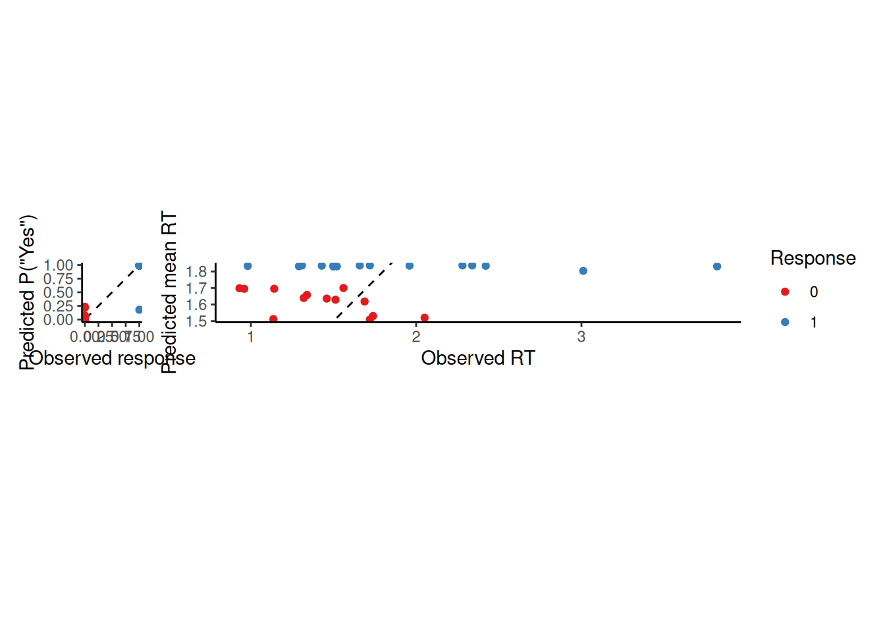

So far, we have focused on models that explain behavior (choice and response time) in terms of how representations of “evidence” are processed via some form of accumulation. We pointed out that the “evidence” in these models was an abstract quantity that would be interpreted differently depending on the application—the “evidence” for Buridan’s Ass was largely perceptual in nature, based on the visual features of his two hay piles; the “evidence” in a recognition memory task came from processes that compared a probe item to the contents of memory; the “evidence” in a visual search task cam from processes that compared the items in the display to a representation of the search target. In this chapter, we begin to dig deeper by explaining where this evidence comes from in a particular task domain. Specifically, we will explore the Exemplar-Based Random Walk (EBRW) model (Nosofsky et al., 2011; Nosofsky & Palmeri, 1997). We will see how this model explains choice and response time in a recognition memory task by explaining how the relevant evidence is derived.
The EBRW is a dynamic extension of the earlier Generalized Context Model (GCM)(Nosofsky, 1986). According to both tbe EBRW and GCM, each time you experience an item in a particular context, it leaves a “trace” in memory. This trace is called an “exemplar” or an “instance” and it consists of a record of the values the item had for particular features or attributes. When you are presented with a probe item, it activates each of these exemplars in memory in proportion to how similar the features of the probe are to the features of the exemplars in memory.
The EBRW was originally developed to account for choice and RT in categorization tasks. In what follows, we apply EBRW to a recognition task. Recognition decisions are based on the summed activation across all exemplars in memory, which is termed the “familiarity” of the probe. The extent to which familiarity is higher than a criterion determines the extent to which the probe will be recognized as having been seen before. Specifically, familiarity determines the rate at which evidence accumulates toward either a “yes” or “no” decision regarding whether the probe item was seen before. If the accumulated evidence reaches an upper threshold, a “yes” decision is made; otherwise, if the accumulated evidence reaches a lower threshold, a “no” decision is made.
The text below first describes how familiarity is determined by the summed similarity between a probe and the exemplars in memory, using the concrete example of items consisting of patches of color. Then, the dynamics of evidence accumulation are described. These dynamics are first described as a random walk between the thresholds for “yes” and “no” decisions. Then, we illustrate how the same dynamics can be described in continuous time as a diffusion process instead of a random walk (Nosofsky et al., 2014). Finally, we see how the continuous diffusion process makes it easier to fit the parameters of the EBRW model to recognition data.
9.1 Summed similarity
For concreteness, we imagine an experiment in which several color patches were studied. Colors can be described in terms of three features: hue, chroma (or “saturation”), and luminance (or “brightness”). Imagine that you saw many reddish-hued colors that varied in chroma and luminance. According to the EBRW, each of the colors you saw would leave a trace in memory. Each trace would consist of the values of the color you saw along those three dimensions. In this example, all the colors have the same value for “hue”, which is 0. The value of “0” for “hue” corresponds to a reddish color. The colors differ in their values for chroma and luminance, as illustrated in the graph below:
Code
colDF <-expand_grid(h = hue, c =seq(30, 70, length.out =5), l =seq(30, 70, length.out =5)) %>%mutate(col =hcl(h, c, l))colDF %>%ggplot(aes(x = c, y = l, fill = col)) +geom_tile(width =2.5, height =2.5) +scale_fill_identity() +coord_equal() +labs(x ="Chroma (saturation)", y ="Luminance (brightness)", caption =bquote(plain(hue) == .(round(hue))))
Your memory traces can also be written as a matrix, where each row corresponds to an item (color) and each column corresponds to a feature (h for “hue”, c for “chroma”, and l for “luminance”):
These coordinates will often be derived using Multidimensional Scaling (MDS)(Nosofsky, 1992; Shepard, 1962a, 1962b). This type of analysis derives a spatial representation of a set of stimuli on the basis of similarity judgments provided by raters.
9.1.1 Perceived distance and similarity
The perceived distance between any two of these colors is the Euclidean distance between their feature values, weighted by the degree of attention given to each feature: \[
d_{ij} = \sqrt{\sum_{k = 1}^{N_F} w_k \left(x_{ik} - x_{jk} \right)^2}
\] where \(w_k\) is the weight given to feature \(k\), \(x_{ik}\) is the value of item \(i\) on feature \(k\), \(x_{jk}\) is the value of item \(j\) on feature \(k\), \(d_{ij}\) is the perceived distance between items \(i\) and \(j\), and \(N_F\) is the number of features which in this example is 3 (hue, chroma, and luminance). Note also that while Euclidean distance is appropriate for colors, other types of distance metrics may be more appropriate for other kinds of stimuli, particularly those with separable dimensions which are perceived independently from one another (e.g., Garner & Felfoldy, 1970).
Perceived similarity between two items, \(s_{ij}\), is an exponential function of the psychological distance between those items: \[
s_{ij} = \exp(-c d_{ij})
\] where \(c\) is a sensitivity parameter that controls how quickly perceived similarity decreases with distance, as illustrated in the graph below:
Code
expand_grid(d =seq(0, 10, length.out =151), c =seq(0.25, 3, by =0.25)) %>%mutate(s =exp(-c * d)) %>%ggplot(aes(x = d, y = s, color = c, group = c)) +geom_line() +scale_color_continuous_sequential() +labs(x =expression(d[ij]), y =expression(s[ij])) +theme(legend.position ="inside", legend.position.inside =c(1, 1), legend.justification =c(1, 1))
9.1.2 Summed similarity
Imagine that you have just been shown two colors from among the set shown earlier. We then present you with a third color—a probe item—and ask whether it was one of the two you just saw. You answer this question on the basis of the summed similarity between the probe item and the two items in memory. The probe item has its own vector of feature values, \(\mathbf{x_q}\). The perceived distance between the probe item and each of the memory items is, as above, the Euclidean distance between the probe’s feature values and those of the memory item: \[
\begin{align}
d_{qj} & = \sqrt{\sum_{k = 1}^{N_F} w_k \left(x_{qk} - x_{jk} \right)^2} \\
s_{qj} & = \exp \left( -c d_{qj} \right) \\
S & = \sum_{j = 1}^{N_M} s_{qj}
\end{align}
\] and, again, the perceived similarity \(s_{qj}\) between the probe \(q\) and memory item \(j\) is an exponential function of perceived distance \(d_{qj}\). Finally, summed similarity \(S\) is the sum of the perceived similarities across all \(N_M\) items in memory.
The graphs below illustrate how this works. The left graph shows contours of equal similarity from each of two study items. The right graph shows summed similarity as a function of the chroma and luminance of a probe item (assuming the same hue).
It is reasonable to believe that some memory traces are stronger than others, likely due to things like primacy and recency. In GCM/EBRW, “strength” is operationalized as a scaling factor \(m_j\) applied to perceived similarity: \[
s_{qj} = m_j \exp \left( -c d_{qj} \right)
\]
Stronger traces have their similarity multiplied by a large value (\(m_j\) is large if trace \(j\) is strong) while weaker traces have their similarity multiplied by a small value (\(m_j\) is small if trace \(j\) is weak). This is illustrated in the pair of graphs below. A probe item does not need to be as similar to a strong item in order to evoke the same level of perceived similarity.
The specificity parameter \(c\) represents the fact that items are assumed to be encoded with some degree of error/uncertainty. Just as items may be encoded with more or less strength, it is reasonable to assume that items can be encoded in memory with more or less specificity. Thus, we add a subscript to the \(c\) parameter corresponding to each study item: \[
s_{qj} = m_j \exp \left( -c_j d_{qj} \right)
\]
If an item is encoded with high specificity, then it will only be perceived as similar to the probe if the probe is very close in psychological space. This is illustrated in the pair of graphs below, where item 2 is not only stronger (\(m_2 = 2\) vs. \(m_1 = 1\)) but also more precise (\(c_2 = 0.1\) vs. \(c_1 = 0.05\)).
9.2 Making a recognition decision: From random walk to diffusion
According to the EBRW, each trace \(j\) in memory races to be retrieved at a rate proportional to its perceived similarity to the probe item, \(s_{qj}\). Traces race not just against one another, but against a criterion. If a memory trace wins the race, this is taken as evidence that the probe item matches something in memory, thus favoring a “yes” recognition response. If the criterion wins the race instead, this is taken as evidence that the probe item does not match anything in memory, thus favoring a “no” recognition response.
The idea is that, if the probe item matches something in memory, then the corresponding memory trace (or one sufficiently similar to probably match) should be able to win against the criterion. If nothing wins against the criterion, then this suggests there are no traces in memory that are a good match to the probe.
9.2.1 Accumulating memory evidence
The outcome of each race is added to a running tally which starts at zero. The value of the tally at any given time \(t\), which we can denote \(x(t)\), constitutes the current state of evidence from memory for making a recognition decision. Assume that each race takes \(\Delta t\) seconds to complete. Each time a memory trace wins the race, the tally gets incremented by one; each time the criterion wins the race, the tally gets decremented by one. Put formally, we can write this process as \[
x\left( t + \Delta t \right) =
\begin{cases}
x\left( t \right) + 1 & \text{if trace wins} \\
x\left( t \right) - 1 & \text{if criterion wins}
\end{cases}
\] where \(x(0) = 0\).
9.2.2 Step probabilities
Although we have specified that whether memory evidence goes up or down depends on whether a trace or the criterion wins the race, we have not yet specified how the outcome of that race is determined. The winner of each race is random but depends on the similarity \(s_{qj}\) between each trace \(j\) and the probe \(q\). Specifically, trace \(j\) wins the race with probability: \[
\frac{s_{qj}}{\sum_{k = 1}^N s_{qk} + \kappa}
\] where \(\kappa\) is a nonnegative number that represents how stringent the criterion is. In other words, the equation above says that the probability that trace \(j\) wins the race is the similarity between trace \(j\) and the probe \(q\) divided by the summed similarity across all traces plus the criterion \(\kappa\). In a sense, we can think of the criterion is like a “virtual memory trace” that races alongside the \(N\) actual memory traces.
Remember that we increment memory strength whenever any trace wins the race, regardless of which one it is. Because only one trace can win each race, the probability that any trace wins is just the sum of the probabilities of winning across all \(N\) traces, i.e.: \[
p = \sum_{j = 1}^N \frac{s_{qj}}{\sum_{k = 1}^N s_{qk} + \kappa} = \frac{1}{\sum_{k = 1}^N s_{qk} + \kappa} \left( \sum_{j = 1}^Ns_{qj} \right) = \frac{S}{S + \kappa}
\] where \(S = \sum_{j = 1}^N s_{qj}\) is the summed similarity across all \(N\) traces. The quantity \(p\) is the probability that the random walk takes a step up.
The EBRW models the speed of decision making in terms of how many races must be run until the accumulated win advantage in favor of either a “yes” or “no” response reaches a decision boundary. To convert this to “real time”, we must say how long each race takes and allow for a residual time. Above, we used \(\Delta t\) to stand for the amount of time (in seconds) each race takes to run. It will be convenient later to think instead of \(\nu = \frac{1}{\Delta t}\), where \(\nu\) is the number of races per second.
The figure below shows an example of how memory evidence evolves during a single trial in which \(p = 0.55\), \(\nu = 40\), \(B_{Upper} = 7\), \(B_{Lower} = -8\), and \(t_0 = 0.2\). In addition, the graphs above and below the evidence trajectory illustrate the relative frequency with which, across many identical trials, each type of response would be made at each unit of time. Note that these distributions are discrete because the random walk operates in discrete time intervals, each of duration \(\Delta t\) (which in this example is \(\Delta t = \frac{1}{\nu} = 0.025\) seconds).
Code
set.seed(1)nu <-40p <-0.55B <-c(-8, 7)resid <-0.2### RT distributionsY_rw <-seq(B[1], B[2])P_rw <-matrix(0, nrow =length(Y_rw), ncol =length(Y_rw))P_rw[cbind(2:(nrow(P_rw) -1), 1:(ncol(P_rw) -2))] <-1- pP_rw[cbind(2:(nrow(P_rw) -1), 3:ncol(P_rw))] <- pP_rw[1, 1] <- P_rw[nrow(P_rw), ncol(P_rw)] <-1### Simulationwhile (TRUE) { winner <-0 x_rw <-0while (TRUE) { s <-2* (runif(n =1) < p) -1 x_rw <-c(x_rw, x_rw[length(x_rw)] + s)if (x_rw[length(x_rw)] <= B[1]) { winner <-1break } elseif (x_rw[length(x_rw)] >= B[2]) { winner <-2break } }if (winner ==2& (length(x_rw) / nu) >1.5) {break }}RT_rw <-matrix(0, nrow =2, ncol =length(x_rw))Z_rw <-1*c(Y_rw ==0)for (i in1:length(x_rw)) { Z_rw <- Z_rw %*% P_rw RT_rw[1, i] <- Z_rw[1] RT_rw[2, i] <- Z_rw[length(Z_rw)]}dRT_rw <-apply(RT_rw, MARGIN =1, FUN = diff) * nu /2rtPlot1 <-tibble(t = resid +1:length(x_rw) / nu, p =c(0, dRT_rw[,2])) %>%ggplot(aes(x = t, y = p)) +geom_col(fill ="#eeb211", color =NA, width =1/ nu) +coord_cartesian(xlim =c(0, NA), ylim =c(0, max(c(dRT_rw)))) +labs(x =NULL, y ="Pr(Respond at time t)") +theme(axis.text =element_blank(), axis.ticks.y =element_blank())rtPlot0 <-tibble(t = resid +1:length(x_rw) / nu, p =c(0, dRT_rw[,1])) %>%ggplot(aes(x = t, y = p)) +geom_col(fill ="#46166b", color =NA, width =1/ nu) +labs(x =NULL, y ="Pr(Respond at time t)") +scale_x_continuous(limits =c(0, NA)) +scale_y_reverse(limits =c(max(c(dRT_rw)), 0)) +theme(axis.text =element_blank(), axis.ticks.y =element_blank())rwPlot <-tibble(t = resid +1:length(x_rw) / nu, x = x_rw) %>%ggplot(aes(x = t, y = x)) +geom_step(linewidth =1.5) +geom_hline(yintercept = B[2], linetype ="solid", color ="#eeb211", linewidth =2) +geom_hline(yintercept = B[1], linetype ="solid", color ="#46166b", linewidth =2) +geom_vline(xintercept = resid, linetype ="dashed", color ="#666666", linewidth =2) +geom_text(data =tibble(x =0, y = B[2], label =paste0("B[Upper] == ", B[2])), mapping =aes(x = x, y = y, label = label), color ="#eeb211", inherit.aes =FALSE, parse =TRUE, hjust =0, vjust =2) +geom_text(data =tibble(x =0, y = B[1], label =paste0("B[Lower] == ", B[1])), mapping =aes(x = x, y = y, label = label), color ="#46166b", inherit.aes =FALSE, parse =TRUE, hjust =0, vjust =-1) +geom_text(data =tibble(x = resid, y =0, label =paste0("t[0] == ", resid)), mapping =aes(x = x, y = y, label = label), color ="#666666", inherit.aes =FALSE, parse =TRUE, hjust =1.1, vjust =1.5) +coord_cartesian(xlim =c(0, NA)) +labs(x ="Retrieval time (s)", y ="Memory evidence", caption =bquote(list(p == .(p), nu == .(nu))))rtPlot1 + rwPlot + rtPlot0 +plot_layout(ncol =1, heights =c(1, 1.75, 1))
9.2.3 From discrete random walk to continuous diffusion
A random walk takes discrete-valued steps either up or down in discrete units of time. A Wiener diffusion process takes continuous-valued steps sampled from a normal distribution in infinitely small units of time, thus effectively operating in continuous time. We are going to approximate the discrete EBRW with a continuous diffusion process (so technically we should call this model the EBD for Exemplar-Based Diffusion, but we will keep calling it the EBRW for posterity).
In going from a random walk to a diffusion model, we are making an important psychological claim: We are saying that, instead of memory evidence arriving in discrete units at regular intervals, memory evidence is a continuous value that continually evolves as new information arrives. We can think of this as saying that, instead of only knowing the outcome of each race, you can see who is ahead and who is behind at any given time; this is the move from discrete time to continuous time. Moreover, instead of only scoring each race as a win or loss for the memory traces, the races are assigned a continuous value depending on how clear the winner is; this is the move from discrete evidence to continuous evidence.
9.2.3.1 Mean and standard deviation of diffusion
We can write the update equation for the random walk like we did above: \[
\begin{align}
x \left( t + \Delta t \right) & = \begin{cases} x(t) + 1 & \text{with probability } p \\ x(t) - 1 & \text{with probability } 1 - p \end{cases} \\
x \left( t + \Delta t \right) - x(t) & = \begin{cases} 1 & \text{with probability } p \\ -1 & \text{with probability } 1 - p \end{cases} \\
x \left( t + \Delta t \right) - x(t) & \sim 2 \times \text{Bernoulli} \left( p \right) - 1
\end{align}
\] where we have rearranged terms and used the shorthand in the final line to emphasize the idea that each step of the random walk can be thought of as a sample from a Bernoulli distribution with parameter \(p\) that is then transformed from \(\lbrace 0, 1 \rbrace\) to \(\lbrace -1, 1 \rbrace\).
To turn this into a continuous diffusion process, we need to swap out the transformed Bernoulli distribution with a normal distribution that has the same mean and variance. The mean is \(2 p - 1\) and the variance is \(4 p \left(1 - p \right)\). One more thing: remember that we run \(\nu\) races per second, so we need to multiply the mean and variance by \(\nu\). Therefore, the mean drift rate is \(v = \nu \left(2 p - 1 \right)\) and the variance is \(\sigma^2 = 4 \nu p (1 - p)\).
Note that this is different from the typical diffusion model where the variance of the evidence samples is arbitrarily fixed to 1. Notice an important property of this variance: It is largest when \(p = 0.5\) and approaches zero as \(p\) approaches either 0 or 1. In other words, the more uncertain the outcome of each race, the more noise there is in the diffusion. This is illustrated below:
Code
expand_grid(p =seq(0, 1, length.out =101), nu =seq(10, 40, by =10)) %>%mutate(sigma2 =4* nu * p * (1- p)) %>%ggplot(aes(x = p, y = sigma2, color = nu, group = nu)) +geom_line() +labs(x = p, y =expression(sigma^2), color =expression(nu)) +theme(legend.position =c(1, 1), legend.justification =c(1, 1))
Warning: A numeric `legend.position` argument in `theme()` was deprecated in ggplot2
3.5.0.
ℹ Please use the `legend.position.inside` argument of `theme()` instead.
To summarize, the difference between the random walk and the diffusion is that we have swapped out a discrete binomial distribution of evidence increments per unit time with a continuous normal distribution of evidence increments per unit time. Everything else is the same: You still respond “yes” if and when the accumulated evidence \(x(t)\) reaches either the upper boundary or the lower boundary.
9.2.3.2 Closeness of predictions
To illustrate how well the diffusion process approximates the random walk, the graphs below show the diffusion approximation to the same random walk example used above. The smooth lines in the upper and lower graphs are the probability of responding per unit time (i.e., the probability density function) according to the Wiener diffusion model. The open bars are the same probabilities from the random walk. The diffusion model’s predictions hew very closely to those of the random walk!
Code
mu <- nu * (2* p -1)sigma2 <-4* nu * p * (1- p)boundsep <- B[2] - B[1]bias <- (0- B[1]) / (B[2] - B[1])delta_t <-0.001while (TRUE) { winner_diff <-NA x_diff <-0while (TRUE) { x_diff <-c(x_diff, x_diff[length(x_diff)] +rnorm(n =1, mean = mu * delta_t, sd =sqrt(sigma2 * delta_t)))if (x_diff[length(x_diff)] <= B[1]) { winner_diff <-1break } elseif (x_diff[length(x_diff)] >= B[2]) { winner_diff <-2break } }if (winner == winner_diff &abs((length(x_diff) * delta_t) - (length(x_rw) / nu)) < (1/ nu)) {break }}x_diff <-pmax(pmin(x_diff, B[2]), B[1])t <-seq(1, length(x_diff)) * delta_tdRT_diff <-cbind(WienerPDF(t = t, response ="lower", a = boundsep /sqrt(sigma2), v = mu /sqrt(sigma2), w = bias)$value,WienerPDF(t = t, response ="upper", a = boundsep /sqrt(sigma2), v = mu /sqrt(sigma2), w = bias)$value)rtPlot1 <-tibble(t = resid + t, p = dRT_diff[,2]) %>%ggplot(aes(x = t, y = p)) +geom_col(data =tibble(t = resid +1:length(x_rw) / nu, p =c(0, dRT_rw[,2])), color ="#eeb211aa", fill =NA, width =1/ nu) +geom_area(fill ="#eeb21177", color ="#eeb211") +coord_cartesian(xlim =c(0, NA), ylim =c(0, max(c(dRT_diff)))) +labs(x =NULL, y ="Pr(Respond at time t)") +theme(axis.text =element_blank(), axis.ticks.y =element_blank())rtPlot0 <-tibble(t = resid + t, p = dRT_diff[,1]) %>%ggplot(aes(x = t, y = p)) +geom_col(data =tibble(t = resid +1:length(x_rw) / nu, p =c(0, dRT_rw[,1])), color ="#46166baa", fill =NA, width =1/ nu) +geom_area(fill ="#46166b77", color ="#46166b") +labs(x =NULL, y ="Pr(Respond at time t)") +scale_x_continuous(limits =c(0, NA)) +scale_y_reverse(limits =c(max(c(dRT_diff)), 0)) +theme(axis.text =element_blank(), axis.ticks.y =element_blank())rwPlot <-tibble(t = resid + t, x = x_diff) %>%ggplot(aes(x = t, y = x)) +geom_line() +geom_hline(yintercept = B[2], linetype ="solid", color ="#eeb211", linewidth =2) +geom_hline(yintercept = B[1], linetype ="solid", color ="#46166b", linewidth =2) +geom_vline(xintercept = resid, linetype ="dashed", color ="#666666", linewidth =2) +geom_text(data =tibble(x =0, y = B[2], label =paste0("B[Upper] == ", B[2])), mapping =aes(x = x, y = y, label = label), color ="#eeb211", inherit.aes =FALSE, parse =TRUE, hjust =0, vjust =2) +geom_text(data =tibble(x =0, y = B[1], label =paste0("B[Lower] == ", B[1])), mapping =aes(x = x, y = y, label = label), color ="#46166b", inherit.aes =FALSE, parse =TRUE, hjust =0, vjust =-1) +geom_text(data =tibble(x = resid, y =0, label =paste0("t[0] == ", resid)), mapping =aes(x = x, y = y, label = label), color ="#666666", inherit.aes =FALSE, parse =TRUE, hjust =1.1, vjust =1.5) +coord_cartesian(xlim =c(0, NA)) +labs(x ="Retrieval time (s)", y ="Memory evidence", caption =bquote(list(p == .(p), nu == .(nu), v == .(signif(mu, 3)), sigma == .(signif(sqrt(sigma2), 3)))))rtPlot1 + rwPlot + rtPlot0 +plot_layout(ncol =1, heights =c(1, 1.75, 1))
9.3 Implementation in R
To find the EBRW parameters that best fit the recognition data from a participant, let’s implement the diffusion version of the EBRW in R using the WienR package. We must define a function to compute the negative log-likelihood (NLL) for a set of observed responses/RT’s, given a set of parameters. The function itself, in outline form, looks like the one below. I have written comments for the things that the function needs to accomplish to get from what is given to the function (in the parentheses following function) to what the function needs to return at the end.
For example purposes, this implementation doesn’t include all of the bells and whistles that the full model includes. It will not allow for varying trace strength nor will it include attention weights on each dimension. This is meant to illustrate the basic idea that we can define a diffusion model in which the drift rates are derived from a theory, rather than just estimated.
Code
# Function arguments:# par: this is a named vector of parameter values# stim_coords: this is a matrix of the coordinates of the stimuli, where each row is a stimulus and each column is a dimension# study_items: this is a matrix where each row is a trial and each column indicates the items that were studied on that trial# probe_item: this is a vector giving the index of the probe item on each trial# response: this is a vector where each value is 2 or 1, depending on whether the participant responded "yes" (2) or "no" (1) on that trial# rt: this is a vector of the response times from each trialebrw_nll <-function(par, stim_coords, study_items, probe_item, response, rt) {# 1. Compute the mean and SD of the drift for each trial# 2. Calculate the log-likelihood of each observed response/RT on each trial# 3. Return final resultreturn(nll)}
Let’s now fill in each of those sections in turn.
9.3.1 Parameters
The vector par that is the first argument to the ebrw_nll function should be a named vector that has the following entries:
Code
par <-c("retrieval_rate"=3, # This is the "nu" parameter"a"=2, # Response caution"w"=0.5, # Response bias"t0"=0, # Residual time"specificity"=1, # Specificity of memory representations (the "c" parameter)"criterion"=1# Criterion (the "kappa" parameter))
9.3.2 Computing the mean and SD of the drift for each trial
Recall that the drift rates depend on the distances between each of the stimulus items. Since the function is provided with stim_coords, we can make our job a little easier by using the dist function to compute the matrix of distances between all pairs of items. This saves us from “recomputing” the distances between pairs of items that occur on multiple trials:
Code
stim_dists <-as.matrix(dist(stim_coords))
Then, to compute the summed similarity for each trial i, we can use a for loop:
Code
evidence_mean <-rep(0, length(probe_item))evidence_sd <-rep(0, length(probe_item))for (i in1:length(probe_item)) { summed_sim <-sum(exp(-par["specificity"] * stim_dists[probe_item[i], study_items[i,]])) p <- summed_sim / (summed_sim + par["criterion"]) evidence_mean[i] <- par["retrieval_rate"] * (2* p -1) evidence_sd[i] <-2*sqrt(par["retrieval_rate"] * p * (1- p))}
We have now completed the second step of writing the ebrw_nll function, as summarized below.
Code
# Function arguments:# par: this is a named vector of parameter values# stim_coords: this is a matrix of the coordinates of the stimuli, where each row is a stimulus and each column is a dimension# study_items: this is a matrix where each row is a trial and each column indicates the items that were studied on that trial# probe_item: this is a vector giving the index of the probe item on each trial# response: this is a vector where each value is 2 or 1, depending on whether the participant responsed "yes" (2) or "no" (1) on that trial# rt: this is a vector of the response times from each trialebrw_nll <-function(par, stim_coords, study_items, probe_item, response, rt) {# 1. Compute the mean and SD of the drift for each trial stim_dists <-as.matrix(dist(stim_coords)) evidence_mean <-rep(0, length(probe_item)) evidence_sd <-rep(0, length(probe_item))for (i in1:length(probe_item)) { summed_sim <-sum(exp(-par["specificity"] * stim_dists[probe_item[i], study_items[i,]])) p <- summed_sim / (summed_sim + par["criterion"]) evidence_mean[i] <- par["retrieval_rate"] * (2* p -1) evidence_sd[i] <-2*sqrt(par["retrieval_rate"] * p * (1- p)) }# 2. Calculate the log-likelihood of each observed response/RT on each trial# 3. Return final resultreturn(nll)}
9.3.3 Calculating the log-likelihood
This step is almost too easy. We are using the WienR package, which means we can use the WienerPDF function like we’ve seen already. There is only one thing we need to do: The WienerPDF function assumes that the standard deviation of the diffusion is always equal to one. As such, we need to standardize the drift rate and boundary separation before we send them to the WienerPDF function by dividing each by evidence_sd:
Code
# Function arguments:# par: this is a named vector of parameter values# stim_coords: this is a matrix of the coordinates of the stimuli, where each row is a stimulus and each column is a dimension# study_items: this is a matrix where each row is a trial and each column indicates the items that were studied on that trial# probe_item: this is a vector giving the index of the probe item on each trial# response: this is a vector where each value is 2 or 1, depending on whether the participant responsed "yes" (2) or "no" (1) on that trial# rt: this is a vector of the response times from each trialebrw_nll <-function(par, stim_coords, study_items, probe_item, response, rt) {# 1. Compute the mean and SD of the drift for each trial stim_dists <-as.matrix(dist(stim_coords)) evidence_mean <-rep(0, length(probe_item)) evidence_sd <-rep(0, length(probe_item))for (i in1:length(probe_item)) { summed_sim <-sum(exp(-par["specificity"] * stim_dists[probe_item[i], study_items[i,]])) p <- summed_sim / (summed_sim + par["criterion"]) evidence_mean[i] <- par["retrieval_rate"] * (2* p -1) evidence_sd[i] <-2*sqrt(par["retrieval_rate"] * p * (1- p)) }# 2. Calculate the log-likelihood of each observed response/RT on each trial result <-WienerPDF(t = rt,response = response,a = par["a"] / evidence_sd,w = par["w"],v = evidence_mean / evidence_sd,t0 = par["t0"] )# 3. Return final resultreturn(-sum(result$logvalue))}
9.3.4 Error-checking
It is important for us to do some error checking. Sometimes, a particular combination of parameters will make it impossible for the WienerPDF function to calculate the log-likelihood. When that happens, it gives an error. In essence, such a result tells us that the model cannot work with that combination of parameters. Thus, rather than an “error”, that is really telling us that we should assign zero likelihood to that set of parameters, which is equivalent to a log-likelihood of \(-\infty\).
We can do that kind of check in R by putting the WienerPDF function call within try(). If the WienerPDF function gives an error, then the result that gets stored in trial_wiener is also an error. Otherwise, it just gives us the log-likelihoods that we want.
Let’s set up an “if…else” structure to do this check:
Code
# Function arguments:# par: this is a named vector of parameter values# stim_coords: this is a matrix of the coordinates of the stimuli, where each row is a stimulus and each column is a dimension# study_items: this is a matrix where each row is a trial and each column indicates the items that were studied on that trial# probe_item: this is a vector giving the index of the probe item on each trial# response: this is a vector where each value is 2 or 1, depending on whether the participant responsed "yes" (2) or "no" (1) on that trial# rt: this is a vector of the response times from each trialebrw_nll <-function(par, stim_coords, study_items, probe_item, response, rt) {# 1. Compute the mean and SD of the drift for each trial stim_dists <-as.matrix(dist(stim_coords)) evidence_mean <-rep(0, length(probe_item)) evidence_sd <-rep(0, length(probe_item))for (i in1:length(probe_item)) { summed_sim <-sum(exp(-par["specificity"] * stim_dists[probe_item[i], study_items[i,]])) p <- summed_sim / (summed_sim + par["criterion"]) evidence_mean[i] <- par["retrieval_rate"] * (2* p -1) evidence_sd[i] <-2*sqrt(par["retrieval_rate"] * p * (1- p)) }# 2. Calculate the log-likelihood of each observed response/RT on each trial result <-try(WienerPDF(t = rt,response = response,a = par["a"] / evidence_sd,w = par["w"],v = evidence_mean / evidence_sd,t0 = par["t0"] ))# 3. Return final resultif (class(result) =="try-error") {return(Inf) } else {return(-sum(result$logvalue)) }}
9.4 A worked example
This example uses a single participant’s data from Experiment 2 of Gillespie & Cox (2024). In this experiment, each participant made similarity ratings between all pairs of eight items. Each item was an “auditory texture” constructed via Fourier synthesis. We applied Multidimensional Scaling to the similarity ratings from each participant to assign, for each participant, a set of coordinates to each item. The coordinates are such that items that are farther from one another were associated with lower similarity ratings and those that were closer to one another were assigned higher similarity ratings. Be sure to check out the paper itself for additional detail on how this was done, and how we decided that the multidimensional space in which the stimuli are represented had 3 dimensions. These coordinates will be used for the stim_coords argument of the ebrw_nll function.
In addition to providing similarity ratings, each participant engaged in a recognition memory task. On each trial of this task, the participant heard two auditory textures, presented sequentially. They then heard a “probe” sound and had to decide whether or not it was one of the two sounds that had just been presented. It is these recognition data that we will model with the EBRW.
You can grab the data yourself by running the following chunk of code to download it and load it into your R workspace:
In addition for each trial of the recognition task, the study_items matrix tells us which of the two items had been presented as part of the set to be remembered and the probe_item vector tells us what the probe item was. These numbers refer to row in the stim_coords matrix.
Finally, the rt and response vectors record the response time (in seconds) and the response (where 2 is “yes” and 1 is “no”) produced by this participant on each trial.
9.4.2 Finding optimal parameters
The version of the EBRW that we applied in our paper is a bit more complex than the one we will use here, which only has six free parameters. We will use R’s built-in nlminb function to find the best-fitting values of these parameters. To do this, we need to specify initial values for each parameter in a named vector, as shown below. These initial values don’t necessarily need to be anything in particular as long as they don’t cause the ebrw_nll function to return an error or a value of Inf.
Code
init_par <-c("retrieval_rate"=3, # This is the "nu" parameter"a"=2, # Response caution"w"=0.5, # Response bias"t0"=0, # Residual time"specificity"=1, # Specificity of memory representations (the "c" parameter)"criterion"=1# Criterion (the "kappa" parameter))
We also need to specify the upper and lower values that each of these parameters could possibly take, as shown below:
Code
lower <-c("retrieval_rate"=0, # This is the "nu" parameter"a"=0, # Response caution"w"=0, # Response bias"t0"=0, # Residual time"specificity"=0, # Specificity of memory representations (the "c" parameter)"criterion"=0# Criterion (the "kappa" parameter))upper <-c("retrieval_rate"=Inf, # This is the "nu" parameter"a"=Inf, # Response caution"w"=1, # Response bias"t0"=min(rt), # Residual time"specificity"=Inf, # Specificity of memory representations (the "c" parameter)"criterion"=Inf# Criterion (the "kappa" parameter))
Note that these upper and lower values can be Infinite if necessary!
Finally, let’s use the nlminb function, which we need to provide with each of the ingredients we prepared above. We will save the result as fit:
Code
fit <-nlminb(start = init_par, # Need to provide initial guess of parameter valuesobjective = ebrw_nll, # Tell R the name of the function to optimizelower = lower, # The lower bounds on each parameterupper = upper, # The upper bounds on each parameterstim_coords = stim_coords, # The coordinates of each stimulusrt = rt, # The vector of RT's on each trialresponse = response, # The vector of responses on each trialstudy_items = study_items, # The study items on each trialprobe_item = probe_item # The probe item on each trial)
Warning in nlminb(start = init_par, objective = ebrw_nll, lower = lower, :
NA/NaN function evaluation
It may seem like a lot of work for such a simple result—six numbers! But it helps to take a step back and realize what we have just done. We had a participant provide similarity ratings for pairs of unusual auditory stimuli that they had never heard before. We found a way to represent how that participant perceives those stimuli in terms of coordinates in a multidimensional space. We could then infer, from their choices and response times in a recognition task, how well this participant could remember these stimuli and how they used perceived similarity to make their choices. We have explained why this participant did what they did not just in terms of accumulating evidence for a decision, but in terms of how they got that evidence from their memory for novel auditory stimuli.
9.5 Predictions by simulation and math
As impressive as it is to have “reverse-engineered” the contents of a participant’s memory from their behavior, there are still some pieces we have left out of the puzzle. Specifically, although we developed a function to calculate the NLL for the purpose of estimating parameters, we haven’t yet built a function to simulate data using the EBRW. That is the purpose of this section. We will also see some explicit mathematical formulae for predicting average performance without the need to run many simulations. In the end, this will enable us to (a) verify the quality of our model fit by comparing its predictions to observations; and (b) make predictions for novel experimental conditions that we may not have observed.
Finally, this section demonstrates a general technique that is often useful in programming a model: Having a single function that can return either the NLL or predictions. Since the model parameters have the same meaning regardless of whether we are calculating likelihoods or making predictions, we can just tell the function what we want it to do with those parameters. The value of this approach is that we won’t accidentally write simulation code that differs in some important way from our likelihood code. For example, if we change the parameters for our likelihood code, we want to make sure that our simulation code respects that change; the approach we take in this section forces us to do this and thereby keep our model consistent.
9.5.1 Simulating individual trials
First, we will see how we can modify our ebrw_nll function to return simulated behavior instead of just the negative log-likelihood of observed choices and RT’s. The chunk of code below gives an outline of our approach, which involves adding a new argument to the function called n_sims. By default, n_sims = 0, which indicates that the function should not do any simulation but should instead return the NLL, as it did above. As you might anticipate, we will need an if...else structure to check whether n_sims > 0 or not.
Code
# Function arguments:# par: this is a named vector of parameter values# stim_coords: this is a matrix of the coordinates of the stimuli, where each row is a stimulus and each column is a dimension# study_items: this is a matrix where each row is a trial and each column indicates the items that were studied on that trial# probe_item: this is a vector giving the index of the probe item on each trial# response: this is a vector where each value is 2 or 1, depending on whether the participant responsed "yes" (2) or "no" (1) on that trial# rt: this is a vector of the response times from each trial# n_sims: this indicates whether or not simulations are meant to be returned instead of the NLLebrw_nll <-function(par, stim_coords, study_items, probe_item, response, rt, n_sims =0) {# 1. Compute the mean and SD of the drift for each trial stim_dists <-as.matrix(dist(stim_coords)) evidence_mean <-rep(0, length(probe_item)) evidence_sd <-rep(0, length(probe_item))for (i in1:length(probe_item)) { summed_sim <-sum(exp(-par["specificity"] * stim_dists[probe_item[i], study_items[i,]])) p <- summed_sim / (summed_sim + par["criterion"]) evidence_mean[i] <- par["retrieval_rate"] * (2* p -1) evidence_sd[i] <-2*sqrt(par["retrieval_rate"] * p * (1- p)) }if (n_sims >0) {# 2a. Simulate a response for each trial# SIMULATION CODE GOES HERE# 3a. Return final resultreturn(result) } else {# 2b. Calculate the log-likelihood of each observed response/RT on each trial result <-try(WienerPDF(t = rt,response = response,a = par["a"] / evidence_sd,w = par["w"],v = evidence_mean / evidence_sd,t0 = par["t0"] ))# 3b. Return final resultif (class(result) =="try-error") {return(Inf) } else {return(-sum(result$logvalue)) } }}
It is worth pointing out that, aside from the if...else structure, nothing else has changed about the function: Other than n_sims it takes exactly the same arguments, meaning it will still use the provided parameters to compute the drift rates for each trial of an experiment based on the similarity between the studied items and the probe.
You may wonder at this point why n_sims is a number—why didn’t we use a boolean like do_simulation which could be either TRUE or FALSE? This is because we may want to simulate multiple replications of a given trial. For example, we may want to simulate an experiment in which the same study/test items are repeated. Alternatively, we may want to use a large number of simulations so that we can estimate the entire distribution of possible responses and response times that a participant might produce on a given trial. In any case, by allowing n_sims to be a number rather than just TRUE or FALSE, we are making our function more flexible—something for which our future selves will thank our current selves.
Back to the business at hand, we need to fill in the blank where it says SIMULATION CODE HERE. Recall that we are using the WienR package, which includes a sampWiener function for simulating choices and RT’s. We used this to build our diffusion simulation code and we can use it again here. The only challenge is that, unlike WienerPDF, sampWiener can only take a single value for the diffusion model parameters (e.g., a, v, w, etc.) at a time. So we will use a for loop to simulate behavior on each individual trial, as shown in the code below (as usual, there are alternative approaches that are more efficient than a for loop, but our aim at the moment is for transparency):
Code
# Function arguments:# par: this is a named vector of parameter values# stim_coords: this is a matrix of the coordinates of the stimuli, where each row is a stimulus and each column is a dimension# study_items: this is a matrix where each row is a trial and each column indicates the items that were studied on that trial# probe_item: this is a vector giving the index of the probe item on each trial# response: this is a vector where each value is 2 or 1, depending on whether the participant responsed "yes" (2) or "no" (1) on that trial# rt: this is a vector of the response times from each trial# n_sims: this indicates whether or not simulations are meant to be returned instead of the NLLebrw_nll <-function(par, stim_coords, study_items, probe_item, response, rt, n_sims =0) {# 1. Compute the mean and SD of the drift for each trial stim_dists <-as.matrix(dist(stim_coords)) evidence_mean <-rep(0, length(probe_item)) evidence_sd <-rep(0, length(probe_item))for (i in1:length(probe_item)) { summed_sim <-sum(exp(-par["specificity"] * stim_dists[probe_item[i], study_items[i,]])) p <- summed_sim / (summed_sim + par["criterion"]) evidence_mean[i] <- par["retrieval_rate"] * (2* p -1) evidence_sd[i] <-2*sqrt(par["retrieval_rate"] * p * (1- p)) }if (n_sims >0) {# 2a. Simulate a response for each trial result <-c()# For each trial...for (i in1:length(probe_item)) {# Simulate `n_sims` replications of this trial, using its corresponding parameters trial_sim <-sampWiener(N = n_sims,a = par["a"] / evidence_sd[i],w = par["w"],v = evidence_mean[i] / evidence_sd[i],t0 = par["t0"] )# Append the new set of simulations to our `result`, including an indicator of which trial we are simulating and an index for each simulation result <-rbind( result,tibble(trial = i, sim_index =1:n_sims, rt = trial_sim$q, response = trial_sim$response) ) }# 3a. Return final resultreturn(result) } else {# 2b. Calculate the log-likelihood of each observed response/RT on each trial result <-try(WienerPDF(t = rt,response = response,a = par["a"] / evidence_sd,w = par["w"],v = evidence_mean / evidence_sd,t0 = par["t0"] ))# 3b. Return final resultif (class(result) =="try-error") {return(Inf) } else {return(-sum(result$logvalue)) } }}
The code above uses our old trick of creating an “empty” tibble (results <- c()) and then appending each new set of simulations to the results tibble before returning it. Let’s take the new code out for a spin!
First, let’s see how easy it is to simulate data that comes from exactly the same trials that our participant experienced:
Notice that for the par argument, we used the fitted parameter values we found earlier, which are in fit$par. We also used the exact same stim_coords, study_items, and probe_item arguments as we used when fitting this participant’s data. So essentially what we just did is simulate an imaginary but plausible dataset that this participant could have produced, assuming that the EBRW is a good model of their performance.
While simulating a single dataset has its value—like with the parameter recovery exercises we did with diffusion models—we might be more interested in the distribution of responses and response times that this participant might produce. This is one reason why it is handy to be able to set n_sims to a large value, as in the chunk of code below. We can then estimate, for example, the probability of making a “yes” response in a particular trial, or the mean correct response time. That said, the next section will show us how we can obtain predictions for response probabilities and mean RT’s mathematically. However, mathematical formulae won’t always be available, so we will often fall back on simulations.
Code
# Simulate many trialssim_trials <-ebrw_nll(par = fit$par,stim_coords = stim_coords,study_items = study_items,probe_item = probe_item,n_sims =1000)# Obtain mean predictions for each trialsim_means <- sim_trials %>%group_by(trial) %>%summarize(sim_p_upper =mean(response =="upper"),sim_mean_rt_yes =mean(rt[response =="upper"]),sim_mean_rt_no =mean(rt[response =="lower"]) )print(sim_means)
You may already notice one issue with using simulation to obtain average model predictions. According to the fitted model, there is almost no chance that this participant gives a “yes” response on trial 9. Even in 1000 simulations, the model never produced a “yes” response on that trial. As a result, we would need to simulate many trials before we got a stable estimate of the mean RT for a “yes” response on the trial (though, given how unlikely it is, maybe we wouldn’t be too interested in that prediction anyway).
Out of curiousity, let’s see what the study items and probe were for trial 9:
Code
study_items[9,]
[1] 3 4
Code
probe_item[9]
[1] 6
If you refer back to the MDS plot above, we see that items 3 and 4 (the studied items on trial 9) both fall on one end of “Dimension 1” whereas item 6 (the probe item) falls on the other side. In other words, the probe is pretty far from both studied items, so it makes sense that the EBRW would predict a very low probability that this participant incorrectly says “yes” on that trial.
9.5.2 Mathematical expressions for response probability and mean RT’s
Many cognitive models are sufficiently complex that there aren’t mathematical expressions for their predictions. However, the Wiener diffusion model (i.e., without any extra trial-by-trial variability) actually has mathematical expressions for the mean response probability and mean response times (for each response). These formulae aren’t exactly pretty, but they only involve elementary functions that are built into R, so we can translate them into code.
It may help to keep in mind the following “Rosetta stone” that relates the mathematical notation to things that we recognize from our code:
\(\hat{p}_i\): Probability of giving a “yes” response on trial \(i\).
\(\widehat{RT}_{Y,i}\): Mean RT for “yes” responses on trial \(i\).
\(\widehat{RT}_{N,i}\): Mean RT for “no” responses on trial \(i\).
\(a\): Boundary separation, par["a"].
\(w\): Response bias, par["w"].
\(t_0\): Residual time, par["t0"].
\(v_i\): Mean drift rate on trial \(i\), evidence_mean[i].
\(s_i\): Standard deviation of drift on trial \(i\), evidence_sd[i].
Finally, \(\tanh\) is the hyperbolic tangent function, which is built into R as tanh(). This function is defined by \[
\tanh \left(x \right) = \frac{\exp \left( x \right) - \exp \left(-x \right)}{\exp \left( x \right) + \exp \left(-x \right)}
\] and it looks like this:
Code
tibble(x =seq(-3, 3, length.out =201)) %>%mutate(y =tanh(x)) %>%ggplot(aes(x = x, y = y)) +geom_line() +labs(x ="x", y ="tanh(x)")
Armed with these mathematical expressions, we can readily translate them into R code. We’ll first do that and then see how we can insert that code into our ebrw_nll function. In the following, we are again using a for loop over each trial, using i as the index for the trial. Like we did with the simulations, we will first create an empty result and then append the predicted response probabilities and mean RT’s for each trial. Also, since the term \(s_i^2\) appears many times across all three formulae, we will want to compute it once and then refer back to it again later. The result is stored as the vector evidence_var.
Code
result <-c()# For convenience, we compute this first so we can refer to it each time we need it laterevidence_var <- evidence_sd^2for (i in1:length(probe_item)) { trial_p_yes <- (1-exp(-2* par["a"] * evidence_mean[i] * par["w"] / evidence_var[i])) / (1-exp(-2* par["a"] * evidence_mean[i] / evidence_var[i])) trial_mean_rt_yes <- par["t0"] + (par["a"] / evidence_mean[i]) * (1/tanh(par["a"] * evidence_mean[i] / evidence_var[i]) - par["w"] /tanh(par["a"] * evidence_mean[i] * par["w"] / evidence_var[i])) trial_mean_rt_no <- par["t0"] + (par["a"] / evidence_mean[i]) * (1/tanh(par["a"] * evidence_mean[i] / evidence_var[i]) - (1- par["w"]) /tanh(par["a"] * evidence_mean[i] * (1- par["w"]) / evidence_var[i])) result <-rbind( result,tibble(trial = i, p_yes = trial_p_yes, mean_rt_yes = trial_mean_rt_yes, mean_rt_no = trial_mean_rt_no) )}
Now we just need to figure out how to get the chunk of code above into our ebrw_nll function. There are a number of reasonable ways to do this. For example, we could add a new argument called something like return_math_pred which we could set to be TRUE or FALSE depending on whether we wanted the mathematically-computed mean predictions. However, since we already have the n_sims argument we added earlier, we can do something a bit clever. Since the mean predictions are based on what we would observe over an infinite number of simulations, we can allow a user to set n_sims = Inf, where Inf is R’s special shorthand for “infinity”. R uses the is.infinite function to check whether a number is infinite or not.
As such, in the code below, we “daisy-chain” the if...else construction we built in the previous section. We first check if (is.infinite(n_sims)) and, if so, run the chunk of code above. We then check for else if (n_sims > 0) and, if so, run the specified but finite number of simulations per trial. Finally, the else statement computes the negative log-likelihoods.
Code
# Function arguments:# par: this is a named vector of parameter values# stim_coords: this is a matrix of the coordinates of the stimuli, where each row is a stimulus and each column is a dimension# study_items: this is a matrix where each row is a trial and each column indicates the items that were studied on that trial# probe_item: this is a vector giving the index of the probe item on each trial# response: this is a vector where each value is 2 or 1, depending on whether the participant responsed "yes" (2) or "no" (1) on that trial# rt: this is a vector of the response times from each trial# n_sims: this indicates whether or not simulations are meant to be returned instead of the NLLebrw_nll <-function(par, stim_coords, study_items, probe_item, response, rt, n_sims =0) {# 1. Compute the mean and SD of the drift for each trial stim_dists <-as.matrix(dist(stim_coords)) evidence_mean <-rep(0, length(probe_item)) evidence_sd <-rep(0, length(probe_item))for (i in1:length(probe_item)) { summed_sim <-sum(exp(-par["specificity"] * stim_dists[probe_item[i], study_items[i,]])) p <- summed_sim / (summed_sim + par["criterion"]) evidence_mean[i] <- par["retrieval_rate"] * (2* p -1) evidence_sd[i] <-2*sqrt(par["retrieval_rate"] * p * (1- p)) }if (is.infinite(n_sims)) {# 2a. Compute predicted response probabilities and mean RT's for each trial result <-c() evidence_var <- evidence_sd^2for (i in1:length(probe_item)) { trial_p_yes <- (1-exp(-2* par["a"] * evidence_mean[i] * par["w"] / evidence_var[i])) / (1-exp(-2* par["a"] * evidence_mean[i] / evidence_var[i])) trial_mean_rt_yes <- par["t0"] + (par["a"] / evidence_mean[i]) * (1/tanh(par["a"] * evidence_mean[i] / evidence_var[i]) - par["w"] /tanh(par["a"] * evidence_mean[i] * par["w"] / evidence_var[i])) trial_mean_rt_no <- par["t0"] + (par["a"] / evidence_mean[i]) * (1/tanh(par["a"] * evidence_mean[i] / evidence_var[i]) - (1- par["w"]) /tanh(par["a"] * evidence_mean[i] * (1- par["w"]) / evidence_var[i])) result <-rbind( result,tibble(trial = i, p_yes = trial_p_yes, mean_rt_yes = trial_mean_rt_yes, mean_rt_no = trial_mean_rt_no) ) }# 3a. Return final resultreturn(result) } elseif (n_sims >0) {# 2b. Simulate a response for each trial result <-c()# For each trial...for (i in1:length(probe_item)) {# Simulate `n_sims` replications of this trial, using its corresponding parameters trial_sim <-sampWiener(N = n_sims,a = par["a"] / evidence_sd[i],w = par["w"],v = evidence_mean[i] / evidence_sd[i],t0 = par["t0"] )# Append the new set of simulations to our `result`, including an indicator of which trial we are simulating and an index for each simulation result <-rbind( result,tibble(trial = i, sim_index =1:n_sims, rt = trial_sim$q, response = trial_sim$response) ) }# 3b. Return final resultreturn(result) } else {# 2c. Calculate the log-likelihood of each observed response/RT on each trial result <-try(WienerPDF(t = rt,response = response,a = par["a"] / evidence_sd,w = par["w"],v = evidence_mean / evidence_sd,t0 = par["t0"] ))# 3c. Return final resultif (class(result) =="try-error") {return(Inf) } else {return(-sum(result$logvalue)) } }}
Again, let’s see how this works. The code below computes the predicted mean response probabilities and RT’s for each trial:
Let’s see how the mathematical predictions compare to those we derived from our 1000 simulations earlier, at least for the first few trials:
Code
knitr::kable(full_join(sim_means, math_pred, by ="trial")[1:12,], digits =3)
trial
sim_p_upper
sim_mean_rt_yes
sim_mean_rt_no
p_yes
mean_rt_yes
mean_rt_no
1
0.001
1.367
1.629
0.004
1.842
1.636
2
0.041
1.948
1.721
0.036
1.888
1.695
3
0.991
1.861
1.384
0.990
1.836
1.631
4
0.986
1.839
1.572
0.990
1.836
1.630
5
0.989
1.867
2.003
0.991
1.833
1.628
6
0.994
1.875
1.967
0.990
1.836
1.631
7
0.993
1.807
1.444
0.990
1.835
1.629
8
0.028
1.938
1.725
0.036
1.888
1.695
9
0.000
NaN
1.521
0.000
1.710
1.520
10
0.988
1.807
1.765
0.992
1.830
1.625
11
0.989
1.807
1.597
0.992
1.831
1.625
12
0.991
1.809
1.789
0.992
1.831
1.625
As we can see, the simulated means tend to be close to the mathematical predictions, but can be off when it comes to predicting mean RT’s for rare responses, since those predictions are based on only a few simulated trials.
9.5.3 Comparing predicted to observed
As noted above, being able to compute predictions from the EBRW is important to verify that it is doing a good job fitting the data. A common way to do this is to make a plot with observed values on the horizontal axis and predicted value on the vertical axis. To the extent that the points in the plot cluster around the diagonal, we have reason to believe that the model’s predictions are closely aligned with what was observed. Relatedly, we can report the \(R^2\) value, i.e., the proportion of variance explained by the model; this is just the square of the Pearson correlation coefficient.
In the present application, we have two observed values on each trial: the response and the RT. Thus, we’ll need to make two plots, one for each measure. But to do that, we’ll first need to get both the observed and predicted data into the same data structure. That’s what the chunk of code below does.
Code
# This tibble contains the observed data for each trialobs_data <-tibble(trial =1:length(probe_item),rt = rt,response = response -1# The "- 1" is because "response" is coded as 2 ("yes") and 1 ("no"), but it'll be easier to instead code this as 1 ("yes") and 0 ("no").)# Since both the observed and predicted data contain a "trial" column, use that to join them togetherobs_pred <-full_join(obs_data, math_pred, by ="trial")
Now let’s try to naively plot the observed and predicted data against one another, as we just described. Note that this will not really work as intended!
Code
resp_plot <- obs_pred %>%ggplot(aes(x = response, y = p_yes, color =factor(response))) +geom_abline(intercept =0, slope =1, linetype ="dashed") +geom_point() +coord_equal() +scale_color_manual(values =c("1"="#377eb8", "0"="#e41a1c")) +labs(x ="Observed response", y ="Predicted P(\"Yes\")", color ="Response")rt_plot <- obs_pred %>%mutate(pred_rt =if_else(response ==1, mean_rt_yes, mean_rt_no)) %>%ggplot(aes(x = rt, y = pred_rt, color =factor(response))) +geom_abline(intercept =0, slope =1, linetype ="dashed") +geom_point() +coord_equal() +scale_color_manual(values =c("1"="#377eb8", "0"="#e41a1c")) +labs(x ="Observed RT", y ="Predicted mean RT", color ="Response")resp_plot + rt_plot +plot_layout(nrow =1, guides ="collect")

In the plots above, each point represents a single trial. While we can see in the left plot (barely) that the model generally tends to predict a high probability of saying “yes” on trials where the participant actually said “yes”, it is much harder to see what is going on in the right plot that shows RT’s. The issue is that the model is making a prediction about the mean RT whereas each point represents a sample from the participant’s RT distribution.
Therefore, a more informative way to judge whether the model is making sensible predictions is to compare its mean predictions against average observed performance. Since this is a recognition memory task, it makes the most sense to average performance depending on whether the probe item was a target (i.e., was one of the studied items) or a foil (i.e., was not one of the studied items). The code below first defines a new column in the obs_pred tibble that indicates the type of trial before aggregating both observed and predicted performance by probe type, then making plots similar to those above.
Code
obs_pred$probe_type <-NAfor (i in1:length(probe_item)) {# Note the use of "%in%"if (probe_item[i] %in% study_items[i,]) { obs_pred$probe_type[i] <-"Target" } else { obs_pred$probe_type[i] <-"Foil" }}obs_pred$probe_type <-factor(obs_pred$probe_type, levels =c("Target", "Foil"))resp_plot <- obs_pred %>%group_by(probe_type) %>%summarize(mean_obs =mean(response), mean_pred =mean(p_yes)) %>%ggplot(aes(x = mean_obs, y = mean_pred, color = probe_type)) +geom_abline(intercept =0, slope =1, linetype ="dashed") +geom_point() +coord_equal() +scale_color_manual(values =c("Target"="#377eb8", "Foil"="#e41a1c")) +labs(x ="Observed response proportion", y ="Predicted P(\"Yes\")", color =NULL)rt_plot <- obs_pred %>%mutate(pred_rt =if_else(response ==1, mean_rt_yes, mean_rt_no)) %>%group_by(probe_type) %>%summarize(mean_obs =mean(rt), mean_pred =mean(pred_rt)) %>%ggplot(aes(x = mean_obs, y = mean_pred, color = probe_type)) +geom_abline(intercept =0, slope =1, linetype ="dashed") +geom_point() +coord_equal() +scale_color_manual(values =c("Target"="#377eb8", "Foil"="#e41a1c")) +labs(x ="Observed mean RT", y ="Predicted mean RT", color =NULL)resp_plot + rt_plot +plot_layout(nrow =1, guides ="collect")
The above graphs are not only easier to see, they allow us to more fairly critique the model. The model does a great job predicting response probabilities as well as mean RT for targets. It looks like it predicts longer mean RT to foils than was observed, but that could also reflect sampling variability. In general, the plots above suggest that the model is generally good at fitting this participant’s data, though it may be missing something about the RT’s. That misfit in part justifies the more complex version of the EBRW that Gillespie & Cox (2024) fit to these data.
9.5.4 Making novel predictions
Now that we have the ability to quickly extract predictions from the EBRW, it is worth pointing out that we can now make predictions about how this participant would respond in a trial they did not experience, perhaps with a different set of study items or a different probe item.
To go even broader, we could imagine a new experiment in which the auditory stimuli were degraded by noise. In that case, we might expect the participant’s sensitivity parameter to be lower in that condition. We could simulate how this would affect their recognition performance with this stimuli (though it is likely that, in such an experiment, the participant would also adjust their response caution and response bias to compensate).
The point is that the EBRW permits us to make predictions regarding particular experimental manipulations, which can then help us design future experiments. This is because the EBRW’s predictions depend upon the specifics of how a participant represents the items in the experiment and contains parameters with meanings that are clearly linked to cognitive constructs like “sensitivity”. This was not necessarily the case with the “generic” decision models we explored earlier in the course.
9.6 Putting it all together
The chunk of code below puts all our EBRW work in one place. There are blanks left in certain areas that could either be filled by observed results or by your own imagination. In addition, a complete script that simulates data using the EBRW, fits the EBRW to the simulated data, and compares the simulated to the fitted data is provided here.
Code
# This could be derived using MDSstim_coords <- ...# These could be actual trials in an experiment or used to construct imaginary trials for simulationstudy_items <- ...probe_item <- ...# These could be observed or simulated; they may not even be needed if you are just doing simulationresponse <- ...rt <- ...# This could be from a model fit or specified manually to do simulationspar <- ...# Function arguments:# par: this is a named vector of parameter values# stim_coords: this is a matrix of the coordinates of the stimuli, where each row is a stimulus and each column is a dimension# study_items: this is a matrix where each row is a trial and each column indicates the items that were studied on that trial# probe_item: this is a vector giving the index of the probe item on each trial# response: this is a vector where each value is 2 or 1, depending on whether the participant responsed "yes" (2) or "no" (1) on that trial# rt: this is a vector of the response times from each trial# n_sims: this indicates whether or not simulations are meant to be returned instead of the NLLebrw_nll <-function(par, stim_coords, study_items, probe_item, response, rt, n_sims =0) {# 1. Compute the mean and SD of the drift for each trial stim_dists <-as.matrix(dist(stim_coords)) evidence_mean <-rep(0, length(probe_item)) evidence_sd <-rep(0, length(probe_item))for (i in1:length(probe_item)) { summed_sim <-sum(exp(-par["specificity"] * stim_dists[probe_item[i], study_items[i,]])) p <- summed_sim / (summed_sim + par["criterion"]) evidence_mean[i] <- par["retrieval_rate"] * (2* p -1) evidence_sd[i] <-2*sqrt(par["retrieval_rate"] * p * (1- p)) }if (is.infinite(n_sims)) {# 2a. Compute predicted response probabilities and mean RT's for each trial result <-c() evidence_var <- evidence_sd^2for (i in1:length(probe_item)) { trial_p_yes <- (1-exp(-2* par["a"] * evidence_mean[i] * par["w"] / evidence_var[i])) / (1-exp(-2* par["a"] * evidence_mean[i] / evidence_var[i])) trial_mean_rt_yes <- par["t0"] + (par["a"] / evidence_mean[i]) * (1/tanh(par["a"] * evidence_mean[i] / evidence_var[i]) - par["w"] /tanh(par["a"] * evidence_mean[i] * par["w"] / evidence_var[i])) trial_mean_rt_no <- par["t0"] + (par["a"] / evidence_mean[i]) * (1/tanh(par["a"] * evidence_mean[i] / evidence_var[i]) - (1- par["w"]) /tanh(par["a"] * evidence_mean[i] * (1- par["w"]) / evidence_var[i])) result <-rbind( result,tibble(trial = i, p_yes = trial_p_yes, mean_rt_yes = trial_mean_rt_yes, mean_rt_no = trial_mean_rt_no) ) }# 3a. Return final resultreturn(result) } elseif (n_sims >0) {# 2b. Simulate a response for each trial result <-c()# For each trial...for (i in1:length(probe_item)) {# Simulate `n_sims` replications of this trial, using its corresponding parameters trial_sim <-sampWiener(N = n_sims,a = par["a"] / evidence_sd[i],w = par["w"],v = evidence_mean[i] / evidence_sd[i],t0 = par["t0"] )# Append the new set of simulations to our `result`, including an indicator of which trial we are simulating and an index for each simulation result <-rbind( result,tibble(trial = i, sim_index =1:n_sims, rt = trial_sim$q, response = trial_sim$response) ) }# 3b. Return final resultreturn(result) } else {# 2c. Calculate the log-likelihood of each observed response/RT on each trial result <-try(WienerPDF(t = rt,response = response,a = par["a"] / evidence_sd,w = par["w"],v = evidence_mean / evidence_sd,t0 = par["t0"] ))# 3c. Return final resultif (class(result) =="try-error") {return(Inf) } else {return(-sum(result$logvalue)) } }}
9.7 Exercises
This exercise makes use of the EBRW example script mentioned in the main text. It replicates the recognition memory task described in the chapter, assuming two items per study list followed by a single probe item. With this script, you can specify stim_coords and, by default, it will simulate one trial for each possible combination of study items and probe item (i.e., all possible 2-item lists, followed by all possible probe items). The script then fits the EBRW to the simulated data using exactly the same code as in the chapter. Finally, the script also produces plots of predicted vs. observed performance just like in the chapter.
Replace the stim_coords matrix in the example file with one of your own devising. As a reminder, each row should correspond to a different item with each column giving its coordinate along the corresponding dimension. You might define your stim_coords based on pre-existing knowledge of psychologically-relevant stimulus dimensions (like with the color example at the beginning of the chapter). You could also find a matrix of coordinates obtained from a published scaling study, or one you carry out yourself. Finally, you could come up with stim_coords that represent a meaningful hypothesis about how some set of items is represented psychologically. In any case, provide your matrix and explain what the items are and what each dimension is.
Modify the simulation parameters in sim_par until the model’s simulated performance resembles what you would expect to see in a real experiment using your stimuli.
Describe an experimental manipulation that you expect would influence the EBRW’s sensitivity parameter. Simulate performance using a lower value of the sensitivity parameter than you used in part (b) and comment on how the model’s predicted performance is affected.
Find values for the other parameters in the model (e.g., boundary separation, drift bias) that allow it to achieve the same speed and accuracy with lower sensitivity (part c) as it achieved with higher sensitivity (part d).
You may have noticed that our implementation of the EBRW assumes that each list of studied items is the same length. Describe how to modify our ebrw_nll function so that study_items can include NA values, thus allowing for lists to vary in length, similar to how we allowed our race model to be robust to sets of different size. Hint: All this involves is putting a na.rm = TRUE somewhere in our code!
This is a follow-up to the previous exercise. In applications of the EBRW to experiments that vary the number of items, it is typical to assume that the “criterion” varies linearly with list length (Nosofsky et al., 2011, 2014). Modify our ebrw_nll function to accommodate this version of the model. The chunk of code below gives a suggestion about how this might be done in such a way that preserves the functionality of the code we used throughout this chapter by keeping the “criterion” parameter and adding a “criterion_slope” parameter.
Code
ebrw_nll <-function(par, stim_coords, study_items, probe_item, response, rt, n_sims =0) { ...if (is.na(par["criterion_slope"])) { criterion_slope <-0 } else { criterion_slope <- par["criterion_slope"] }for (i in1:length(probe_item)) { summed_sim <-sum(exp(-par["specificity"] * stim_dists[probe_item[i], study_items[i,]]))# HINT: You will need to find the value of `list_length` on each trial---how will you do this? (You might think about the fact that we are using `NA` values to indicate when `study_items[i,]` has fewer items than the number of columns in `study_items`). this_criterion <- par["criterion"] + criterion_slope * list_length p <- summed_sim / (summed_sim + this_criterion) evidence_mean[i] <- par["retrieval_rate"] * (2* p -1) evidence_sd[i] <-2*sqrt(par["retrieval_rate"] * p * (1- p)) } ...}
Garner, W. R., & Felfoldy, G. L. (1970). Integrality of stimulus dimensions in various types of information processing. Cognitive Psychology, 1, 225–241.
Gillespie, N. F., & Cox, G. E. (2024). Perception and memory for novel auditory stimuli: Similarity, serial position, and list homogeneity. PsyArXiv. https://doi.org/10.31234/osf.io/n294a
Nosofsky, R. M. (1986). Attention, similarity, and the identification-categorization relationship. Journal of Experimental Psychology: General, 115(1), 39–57.
Nosofsky, R. M. (1992). Similarity scaling and cognitive process models. Annual Review of Psychology, 43, 25–53.
Nosofsky, R. M., Cox, G. E., Cao, R., & Shiffrin, R. M. (2014). An exemplar-familiarity model predicts short-term and long-term probe recognition across diverse forms of memory search. Journal of Experimental Psychology: Learning, Memory, and Cognition, 40(6), 1524–1539.
Nosofsky, R. M., Little, D. R., Donkin, C., & Fific, M. (2011). Short-term memory scanning viewed as exemplar-based categorization. Psychological Review, 118(2), 280–315.
Nosofsky, R. M., & Palmeri, T. J. (1997). An exemplar-based random walk model of speeded classification. Psychological Review, 104(2), 266–300.
Shepard, R. N. (1962a). The analysis of proximities: Multidimensional scaling with an unknown distance function. I. Psychometrika, 27(2), 125–140. https://doi.org/https://doi.org/10.1007/BF02289630
Shepard, R. N. (1962b). The analysis of proximities: Multidimensional scaling with an unknown distance function. II. Psychometrika, 27(3), 219–246. https://doi.org/https://doi.org/10.1007/BF02289621